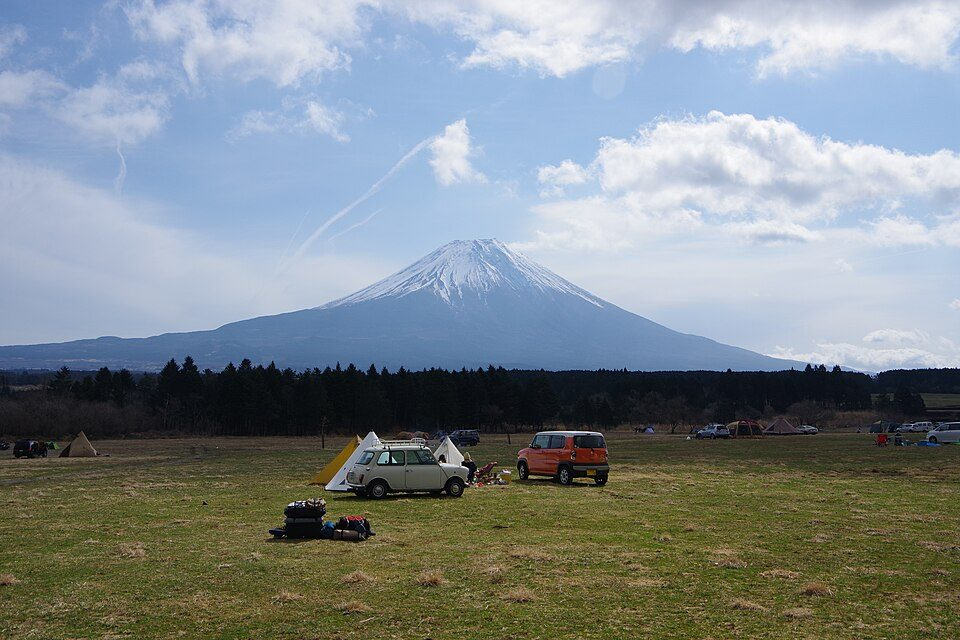
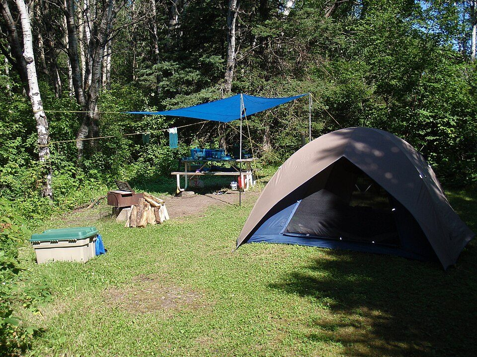
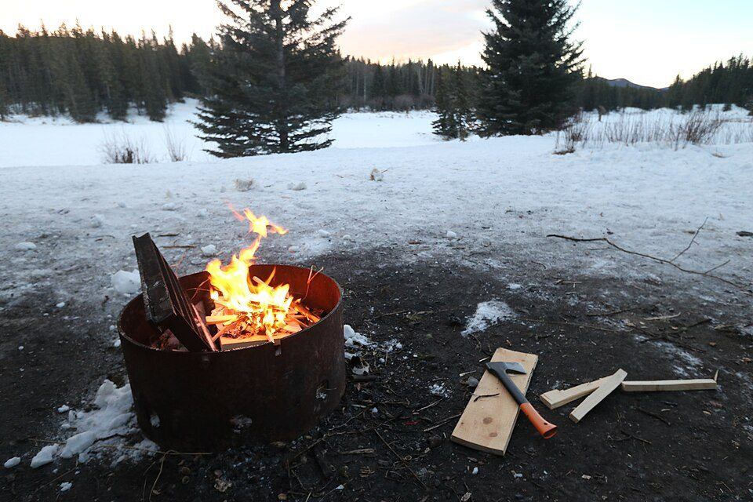
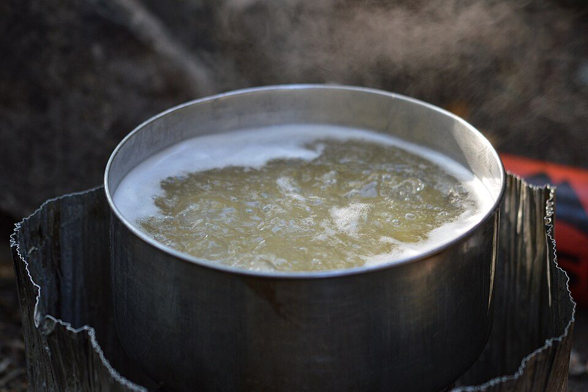

キャンプの始め方：形と費用、道具、火・一酸化炭素・川・クマの安全と決まり
要点まとめ
キャンプは、道具をそろえる前に「どこで、どんな形で泊まるか」を決め、火・天気・生き物の危険と、場所ごとの決まりを知っておくと始めやすくなります。この記事では、日本オートキャンプ協会の白書の数字と、環境省・消防庁・警察庁・製品評価技術基盤機構（NITE）などの公的な資料をもとに、始める前に知っておきたいことをまとめました。特定の道具やキャンプ場をすすめるものではありません。趣味の選び方そのものは、趣味の見つけ方の記事にまとめています。

いまのキャンプを数字で見る
日本オートキャンプ協会は、毎年「オートキャンプ白書」で、キャンプをする人やキャンプ場の調査結果を公表しています。オートキャンプ場は、テントサイトまで車で乗り入れられるキャンプ場のことです[1]。2026年版（2025年の状況）の巻頭要約から、これから始める人に関係する数字を拾いました。
1年に平均5.1回・6.9泊
2025年も、回数と泊数は高い水準を保った
白書2026の巻頭要約によると、キャンプをする人が1年間にキャンプをした平均は、2025年が5.1回・6.9泊でした[1]。2024年は5.0回・6.7泊です[7]。協会は、猛暑やクマの出没情報の影響を受けながらも、高い水準を保ったとしています[1]。
ビギナーが5年ぶりに増えた
キャンプ経験1年の人は16.1％（2025年）
キャンプ経験が1年の「ビギナー層」は2021年以降減っていましたが、2025年は16.1％で、2024年の14.0％を上回り、5年ぶりに増えました[1]。
見方: 上位2つは前の年と変わっていません。前の年に4位だった「安く宿泊するため」が3位に上がり、協会は、キャンプを「廉価な宿泊手段」ととらえる傾向が広がっているとみています[1]。
参加人口の最新の公表値は、2023年の600万人
2024年は「やや減少」。人数は公表資料で確かめられない
協会の令和7年の年頭のあいさつによると、「最も新しい2023年の統計」（オートキャンプ白書2024）で、オートキャンプ参加人口は前の年の650万人から600万人に減りました[8]。2024年については、協会の解説記事が「白書2025では、前年よりやや減少した」と書いていますが、人数は公表資料に見当たりませんでした[7]。2025年の参加人口も、白書2026の巻頭要約には載っていません[1]。
オートキャンプ場は1,757カ所、稼働率は16.3％
施設数は2026年4月現在。数え方が変わった
オートキャンプ場の数は、2026年4月現在で1,757カ所です。協会は今回、インターネット上に公開されている情報を網羅的に調べる方法に変えたとしています（2019年は1,269カ所）[1]。2025年のキャンプ場の稼働率は16.3％でした[1]。
形と場所を選ぶ：サイトの種類と費用
区画サイトとフリーサイト
車を横付けできる区画か、空いた場所に張るか
国営みちのく杜の湖畔公園のキャンプ場では、オートキャンプサイトの広さと駐車スペースが1区画ごとに決まっていて、例えばAサイトは300㎡で電源が付いています。サイトからはみ出さなければ、テントの数に制限はありません[9]。休暇村支笏湖のモラップキャンプ場は、湖畔の空いている場所にテントを張るフリーサイトで、駐車場とテントサイトが隣り合い、荷物を運ぶリヤカーが用意されています[10]。

道具を借りて、手ぶらで始める方法もある
貸し出しや、食材付きのプランがある施設も
休暇村は、国立公園・国定公園の中の全国25カ所にキャンプ場があり、「手ぶらでキャンププラン」を用意しています[13]。休暇村支笏湖では、BBQコンロ（1台500円）やランタン（1個500円）などを当日窓口で借りられます（税の表示なし）[10]。
| 施設 | 車を横付けできる区画 | フリーサイト | ほかにかかる料金 | 税の表示 |
|---|---|---|---|---|
| 国営みちのく杜の湖畔公園（宮城県） | Bサイト 3,000〜6,000円（時期で変わる）[12] | 1,300〜2,300円[12] | 施設利用料金 大人800円（入園料金を含む）、電源 550円[12] | 消費税込み[12] |
| 国営滝野すずらん丘陵公園（札幌市） | スタンダードカーサイト 2,100〜5,050円[14] | フリーテントサイト（車）800〜2,450円[14] | 施設利用料 大人870円（1日分の入園料を含む）[14] | 表示なし |
| 国営讃岐まんのう公園（香川県） | 一般カーサイト 3,500円[11] | 1,550円[11] | 施設維持費 おとな680円（入園料を含む）。電源は有料[11] | 表示なし |
| 休暇村支笏湖 モラップキャンプ場（北海道） | ユニバーサルサイト 1,000円＋人数分の管理費[10] | 1人ごと：大人1,300円、小学生700円、幼児（4歳〜）500円[10] | オートサイト・電源付きサイトはない[10] | フリーサイトは消費税込[10] |
時期の分け方は施設ごとに違います。みちのく公園は通常期（金・土・日・祝前日）・繁忙期（GW・夏休み・連休）・閑散期（金曜日を除く平日）[12]、滝野は最繁忙期間（7/19〜8/31とGW）・通常日・それ以外の日です[14]。滝野の料金は令和5年4月20日以降のもので、2026年4月からはキャビンに泊まる人に宿泊税（1人1日300円）がかかります。テントサイトにはかかりません[14]。
費用の平均は1回23,258円（2024年）
ガソリン代・食費・利用料などを含めた平均
白書2025の発表資料によると、ガソリン代、食費、キャンプ場の利用料などを含めた2024年のキャンプ費用は23,258円で、2023年より2,865円上がりました。キャンプ場の平均利用料金は5,246円で、2023年に初めて5,000円を超えていました（どちらも税の表示なし）[15]。2025年の費用は、白書2026の巻頭要約には載っていません[1]。
予約の前に、キャンセル料と夜の決まりを確かめる
予約した時点でキャンセル料の対象になる施設も
みちのく公園のキャンプ場は、電話・インターネットの予約はすべて本予約で、仮予約はできません[16]。7日前を過ぎてからのキャンセルは、7日前が利用料金の20％、当日が50％、連絡なしが100％です[12]。滝野は、14日前〜前日のキャンセルがサイト使用料の20％です[14]。
テントを張ってよい場所
キャンプ場の外でテントを張ったり、火を使ったりするときの決まりは、場所ごとに違います。
国立公園・国定公園は「決められた場所」で
特別保護地区のたき火は、許可がないとできない
環境省は、植生の破壊、野生動物の誘因、山火事を防ぐため、キャンプやたき火は決められた場所以外ではしないよう呼びかけ、場所によっては法律で規制されているとしています[2]。自然公園法では、国立公園・国定公園の特別保護地区で「火入れ又はたき火」をするには、環境大臣（国定公園は都道府県知事）の許可が要ります。違反すると1年以下の拘禁刑又は100万円以下の罰金です[18]。
川の河川敷は「自由使用」が原則
ただし直火の禁止など、川ごとに決まりがある
国土交通省は、河川は公共の利益や他人の活動を妨げない限り、自由に使えるのが原則だとしています[19]。中部地方整備局は、河川敷でのバーベキュー（キャンプも同様）に、基本的に河川法の許可は要らないとしたうえで、直火は「絶対にやめて下さい」、持ち込んだものやごみは全て持ち帰るよう求めています[20]。
| 場所 | キャンプ・バーベキュー | 火 |
|---|---|---|
| 淀川（淀川河川事務所） | 一般の河川敷ではキャンプ可能。届出や許可は不要[21] | 直火によるたき火の禁止などのマナーを守る[21] |
| 多摩川（京浜河川事務所） | 占用の区域以外は基本的に自由使用。生態系保持空間ではできない[3] | 直火は禁止[3] |
| 荒川下流（荒川下流河川事務所） | バーベキューと煮炊きは、指定場所以外ではできない[22] | 熱源を問わない[22] |
| 鴨川（京都府） | 条例で、河川敷の一部区域のバーベキュー等を禁止[23] | 中止命令に従わないと5万円以下の罰金[23] |
河川法施行令は、川にごみなどを捨てたり放置したりすることを禁じていて、違反は3月以下の拘禁刑又は20万円以下の罰金です[24]。
たき火と、2026年1月からの林野火災注意報・警報

山火事の原因で一番多いのは「たき火」
原因が分かったもののうち32.5％
林野庁によると、原因が分かった林野火災のうち「たき火」が32.5％で最も多く、次いで「火入れ」「放火（疑いを含む）」「たばこ」です（令和2〜6年の平均）[26]。林野火災は、令和2〜6年の平均で1年間に約1.2千件起きています[27]。消防庁は、空気が乾燥し強風が吹く2月から5月ごろを中心に多く発生するとしています[4]。
2025年（令和7年）2月26日に岩手県大船渡市で起きた林野火災をきっかけに、たき火などの屋外の火の決まりが変わりました。
- 2025年2月26日
大船渡市で林野火災が起きる
- 2025年8月26日
消防庁・林野庁の検討会が報告書をまとめる
林野火災注意報・警報の創設などが必要とされた[29]
- 2025年8月29日
消防庁が火災予防条例（例）の改正を通知
- 2026年1月1日
改正した条例（例）の施行期日
- 2026年1月〜
全国の多くの市町村で運用が始まる
| 項目 | 林野火災注意報 | 林野火災警報 |
|---|---|---|
| 発令の目安（例） | 前3日間の雨が合計1mm以下で、前30日間も合計30mm以下か、乾燥注意報が出ている[4] | 注意報の目安に加えて、強風注意報が出ている[4] |
| たき火など屋外の火 | 使うのを控えるよう努める（努力義務）[4] | 使うことが禁止される[4] |
| 罰則 | なし[4] | 30万円以下の罰金又は拘留に科される場合がある[4] |
制限の例には「屋外において火遊び又はたき火をしないこと」が含まれます。発令の目安や制限の中身は、市町村によって違います[4]。
たき火は、消防への届出が要ることも
市町村の条例で、届出が必要になる場合がある
消防庁は、市町村の火災予防条例で、たき火など屋外での火の取り扱いに消防機関への届出が必要となる場合があるとしています[4]。今回の条例（例）の改正では、「火災とまぎらわしい煙又は火炎を発するおそれのある行為」に、たき火が含まれることがはっきり書かれました[30]。
火を使うときの6つの注意
乾燥・強風の日は使わず、消火用の水を用意する
消防庁は、屋外で火を使うときの注意として、①乾燥・強風の日は火を使わない、②たき火や火入れは複数人で行う、③火から目を離さない、④消火用の水を準備する、⑤使用後は完全に消火する、⑥たばこの投げ捨て・火遊びは絶対にしない、を挙げています[4]。
一酸化炭素とガス機器
テントの中では、火を使わない
テントの中のたき火は、約9分で危険な濃度に
NITE（製品評価技術基盤機構）の実験では、2ルームサイズのテントの中でたき火をすると、約9分で一酸化炭素の濃度が200ppmを超えました。ソロ用テントのフライシート（テントの上に重ねて張る布）を閉めた状態でホワイトガソリン式のストーブを使うと、約15分で200ppmを超えました[5]。NITEは200ppmを「危険な値」としていて、テントの中やフライシートの下では、燃料を燃やす器具を絶対に使わないよう呼びかけています[5]。消費者庁も、テントの中などでたき火・こんろ・ランタンを燃やすと、一酸化炭素中毒になるおそれがあるとしています[32]。
図の見方: 風上にテント、風下にたき火台を置くのは、テントの外の火でも風向きによって燃焼した空気がテントにたまる、というNITEの注意[5]をふまえた筆者の提案です。消火用の水[4]、ガス缶を高温の車内に置かないこと[33]、刃物を車に積んで持ち出すことも「携帯」にあたること[34]、生肉を分けて冷やすこと[35]は、それぞれの公的な資料・業界団体の説明によります。

カセットこんろの「してはいけない」
大きな鍋、2台並べる、炭の火おこし、車内に置く
日本ガス石油機器工業会は、こんろをおおうような大きな調理器具を使わない、2台以上並べて使わない、木炭や練炭の火おこしなど調理以外に使わない、カセットボンベを40度以上になる車内などに置かない、テントや車内で使わない、を挙げています[33]。NITEによると、カセットボンベ等の事故は2020〜2024年の5年間に204件で、主に火災でした[36]。
川と天気、クマ・マダニ・食べ物
水の事故で亡くなった人の37.1％が川
令和7年は760人。うち河川で282人
警察庁によると、令和7年の水難の死者・行方不明者は760人で、そのうち河川が282人（37.1％）でした[25]。警察庁は、上流で雨が降っているなど増水のおそれが高いときは、中洲や河原でのバーベキューなどをしない、子供を危険な場所に近づけない、と呼びかけています[25]。
雷が鳴ったら、車や建物の中へ
逃げ込めないときは高い物から4m以上、木から2m以上
気象庁は、鉄筋コンクリートの建物や自動車（オープンカーは不可）の中は比較的安全としています。近くに安全な場所がないときは、電柱などの高い物のてっぺんを45度以上の角度で見上げる範囲で、その物から4m以上離れ、木の幹・枝・葉からは2m以上離れます。雷がやんで20分以上たってから、安全な場所へ移ります[39]。
クマの人身被害は、令和7年度が最多
238人が被害にあい、うち13人が亡くなった（速報値）
環境省の速報値では、クマ類による人身被害は令和7年度が216件・238人（うち死亡13人）でした。表のある平成20年度以降で最も多い数です。令和8年度は10月末までで72件・76人（うち死亡6人）です[42]。
食べ物とごみで、クマを引き寄せない
ごみは持ち帰り、野生動物に餌を与えない
環境省は、ごみの臭いによる野生動物の誘因を防ぐため、ごみを持ち帰り、野生動物に餌を与えないよう求めています[2]。クマ類の出没対応マニュアルでは、キャンプ場などの管理者に、クマを餌付かせないよう誘引物（食べ物やごみなど、クマを引き寄せるもの）の管理を徹底するよう求めています[43]。
マダニは春から秋に注意
長袖・長ズボンと足を覆う靴。刺されたら引き抜かない
厚生労働省は、マダニの活動が盛んな春から秋は刺される危険が高まるとし、長袖・長ズボン、足を完全に覆う靴（サンダル等は避ける）を勧めています。刺されたら無理に引き抜かず、医療機関（皮膚科）で処置してもらい、その後数週間は体調の変化に注意するよう求めています[45]。マダニが媒介するSFTS（重症熱性血小板減少症候群）の届出は、2025年に発病した人が192例で、2013年以降で最も多くなりました[46]。日本の患者の致命率は27％です[47]。
くわしく
- SFTSの届出は、累計で1,368例（2026年7月31日現在）[46]
肉は中心まで75℃で1分間以上
生肉用のトングを分け、クーラーボックスで冷やす
厚生労働省は、多くの病原体は75℃で1分間以上の加熱で死滅するため、中心部までしっかり火を通すことが重要だとしています[48]。農林水産省は、クーラーボックスに入れて保冷剤でしっかり冷やすこと、生肉や生魚をつかむ箸やトングを別に用意することを呼びかけています[35]。
刃物の決まりと、出かける前の点検
刃体6cmをこえる刃物は、正当な理由なく持ち歩けない
なた・おの・のこぎりも対象。車に積むのも「携帯」
銃刀法は、業務その他正当な理由による場合を除き、刃体の長さが6cmをこえる刃物の携帯を禁じています。違反は2年以下の拘禁刑又は30万円以下の罰金です[6]。静岡県警察は、包丁・ナイフ・なた・おの・のこぎりなども対象で[50]、車両内に積載するなどして自宅などから持ち出すことも「携帯」にあたる一方、持っていること（所持）自体は禁止されていないと説明しています[34]。
注意
キャンプで使うための持ち運びが「正当な理由」にあたるかを、名指しで説明した警察の公式ページは見つかりませんでした。筆者の提案は、使う日だけ持ち出し、使い終わったら車に積んだままにしないこと、迷ったら最寄りの警察署に確かめることです。
| いつ | 確かめること |
|---|---|
| 前日まで | □ キャンプ場のキャンセル料と、直火・夜の決まり[16][12] |
| 前日まで | □ 林野火災注意報・警報が出ていないか（警報中は屋外で火を使えない）[4] |
| 前日〜当日 | □ 大雨・洪水の危険度（キキクル）と、上流の雨[40][25] |
| 当日 | □ テントの中・フライシートの下で火を使わない[5] |
| 当日 | □ 生肉は分けて冷やし、中心まで75℃で1分間以上焼く[35][48] |
| 帰る前 | □ 火を完全に消した[4] |
| 帰る前 | □ ごみを持ち帰る（施設が回収するのは一部だけのことも）[2][10] |
| 帰った後 | □ 刃物を車に積んだままにしない。数週間はマダニの体調変化に注意[34][45] |
ほかの行き先選びは国内旅行の行き先の記事に、自転車で出かけるならロードバイクの始め方の記事にまとめています。
今回確認できなかった点
- 2024年・2025年のオートキャンプ参加人口の人数（2024年は「やや減少」とだけ公表）
- 2025年のキャンプ費用と、キャンプ場の平均利用料金（費用は2024年の値）
- キャンプで使う刃物の持ち運びが「正当な理由」にあたるかの、警察の公式な説明
- テントの中での一酸化炭素中毒の事故の件数（実験の数字と、キャンプ用品全体の事故件数で代えた）
- 滝野・まんのう公園の料金が税込か税抜か。市町村が運営するキャンプ場の料金の例
- テントとたき火台を何m離せばよいかの、公的な数値の目安
- キャンプをする人向けに、食べ物とごみの管理を書いた環境省の資料（マニュアルは管理者向け）
出典（53件）
閲覧日はいずれも2026年11月11日〜12日
- オートキャンプ白書2026 巻頭要約（PDF）（一般社団法人 日本オートキャンプ協会）
- 国立公園の利用上のマナー（環境省）
- バーベキューや芋煮会をしたいんですが…（国土交通省 関東地方整備局 京浜河川事務所）
- 林野火災への備え（総務省消防庁）
- 増加するキャンプ需要～初心者が守るべき注意点～（2021年4月28日、PDF）（製品評価技術基盤機構（NITE））
- 銃砲刀剣類所持等取締法（e-Gov法令検索）
- レジャー白書2025にみる市場トレンドと、オートキャンプ白書が示すキャンプ利用の現状（2025年11月18日）（一般社団法人 日本オートキャンプ協会）
- 令和7年 年頭のご挨拶（一般社団法人 日本オートキャンプ協会）
- オートキャンプサイト（エコキャンプみちのく）（国営みちのく杜の湖畔公園）
- 休暇村支笏湖 キャンプ場（モラップキャンプ場）（一般財団法人 休暇村協会）
- 料金・メニューガイド（オートキャンプ場）（国営讃岐まんのう公園）
- 料金案内（エコキャンプみちのく）（国営みちのく杜の湖畔公園）
- キャンプを愉しむ（一般財団法人 休暇村協会）
- 利用料金（オートリゾート滝野）（国営滝野すずらん丘陵公園）
- Press Release「オートキャンプ白書 2025」（2025年7月18日、PDF）（一般社団法人 日本オートキャンプ協会）
- 利用案内（エコキャンプみちのく）（国営みちのく杜の湖畔公園）
- 施設ガイド（オートキャンプ場）（国営讃岐まんのう公園）
- 自然公園法（e-Gov法令検索）
- 急な増水による河川水難事故防止アクションプラン（平成19年7月3日）（国土交通省）
- 河川利用に関するFAQ（国土交通省 中部地方整備局）
- Ｑ．淀川（宇治川・木津川・桂川）河川敷でキャンプをしてもいいですか？（国土交通省 近畿地方整備局 淀川河川事務所）
- バーベキューについて（国土交通省 関東地方整備局 荒川下流河川事務所）
- バーベキュー等の禁止（鴨川）（京都府）
- 河川法施行令（e-Gov法令検索）
- 令和７年における水難の概況等（令和8年6月18日、PDF）（警察庁）
- 山火事の直接的な原因にはどのようなものがあるの？（林野庁）
- 日本では山火事はどの位発生しているの？（林野庁）
- 「林野火災の予防及び消火活動について（通知）」の改正について（令和7年8月29日、PDF）（総務省消防庁）
- 令和7年版 消防白書 トピックス（PDF）（総務省消防庁）
- 火災予防条例（例）の一部改正について（通知）（令和7年8月29日、PDF）（総務省消防庁）
- 林野火災注意報・林野火災警報の状況（総務省消防庁）
- 行楽シーズン到来!安全にレジャーを楽しみましょう（2023年4月27日）（消費者庁）
- カセットこんろ・カセットボンベの安全な使い方（一般社団法人 日本ガス石油機器工業会）
- 携帯禁止刃物チラシ（PDF）（静岡県警察）
- バーベキューを楽しむ皆様へ（農林水産省）
- 製品安全情報マガジン Vol.485（2025年9月22日号）（製品評価技術基盤機構（NITE））
- おうちキャンプを楽しく安全に～使い方・捨て方・選び方～（2020年8月27日、PDF）（製品評価技術基盤機構（NITE））
- 河川水難事故防止ポータルサイト（国土交通省）
- 雷から身を守るには（気象庁）
- キキクル（気象庁）
- 熱中症警戒情報とは（熱中症予防情報サイト）（環境省）
- クマ類による人身被害について［速報値］（令和8年11月10日、PDF）（環境省）
- クマ類の出没対応マニュアル－改定版－ 概要版（PDF）（環境省）
- 『クマ撃退スプレーの性能に係る推奨要件』の概要（令和8年8月、PDF）（環境省）
- ダニ媒介感染症（厚生労働省）
- 感染症発生動向調査で届出られたSFTS症例の概要（2026年7月31日現在、PDF）（国立健康危機管理研究機構（JIHS））
- 重症熱性血小板減少症候群（SFTS）に関するQ&A（厚生労働省）
- お肉はよく焼いて食べよう（厚生労働省）
- 子ども安全メール Vol.598 バーベキュー時の事故に注意!（2022年7月28日）（消費者庁）
- 外に持ち出し携帯することが禁止される刃物（静岡県警察）
- 軽犯罪法（e-Gov法令検索）
- 刃物の話（警視庁）
- これってナイフ所持違反ですか？（よくある質問）（警視庁）
写真・画像の出典（4件）
- 富士山のふもとのキャンプ場（静岡県・ふもとっぱら）
写真: irisgazer／Wikimedia Commons（パブリックドメイン） - 区画サイトに張ったテントとタープ（カナダ・ライディングマウンテン国立公園）
写真: Norm Andreiw／Wikimedia Commons（CC BY 3.0） - たき火台でのたき火（雪の残るキャンプ地）
写真: Thank you for visiting my page from Canada／Wikimedia Commons（CC BY 2.0） - キャンプ用のこんろでの調理（カナダ・アルゴンキン州立公園）
写真: Ryan Hodnett／Wikimedia Commons（CC BY-SA 4.0）